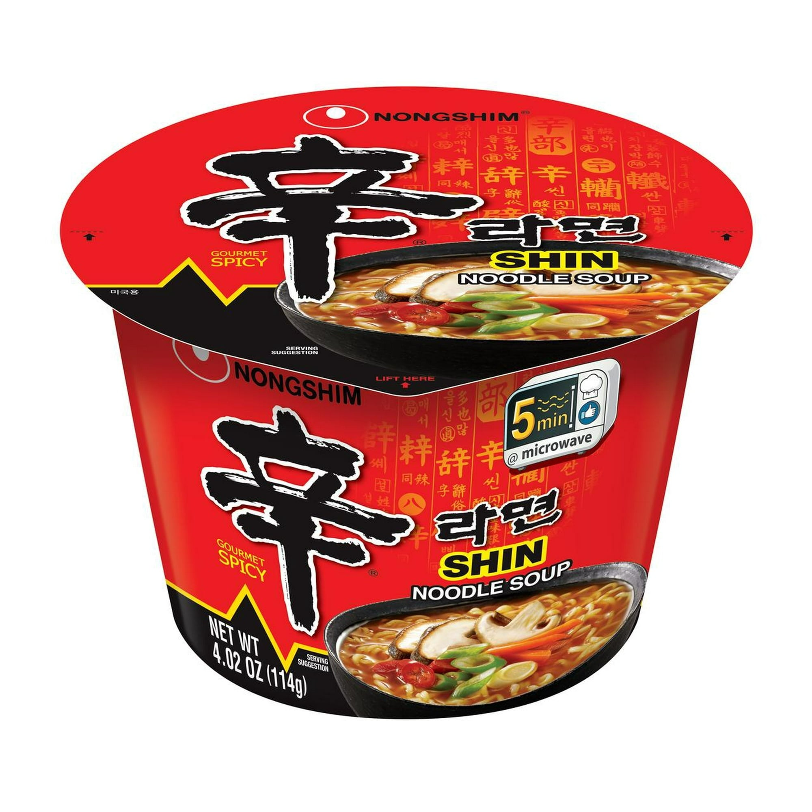
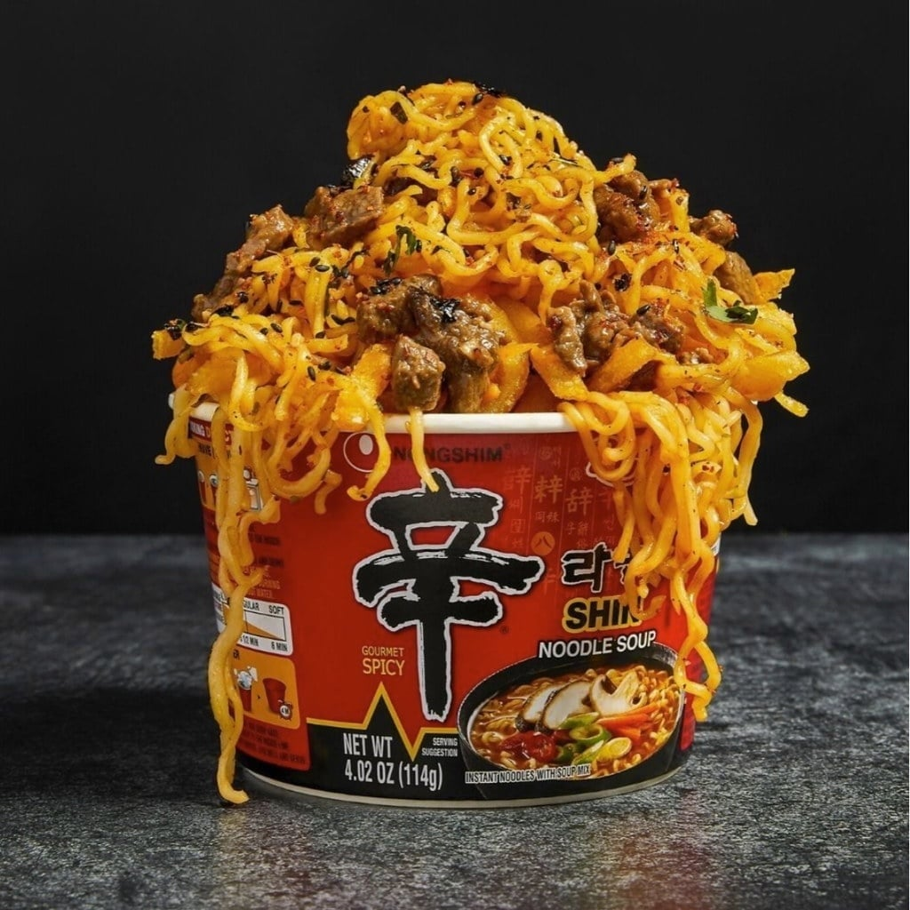
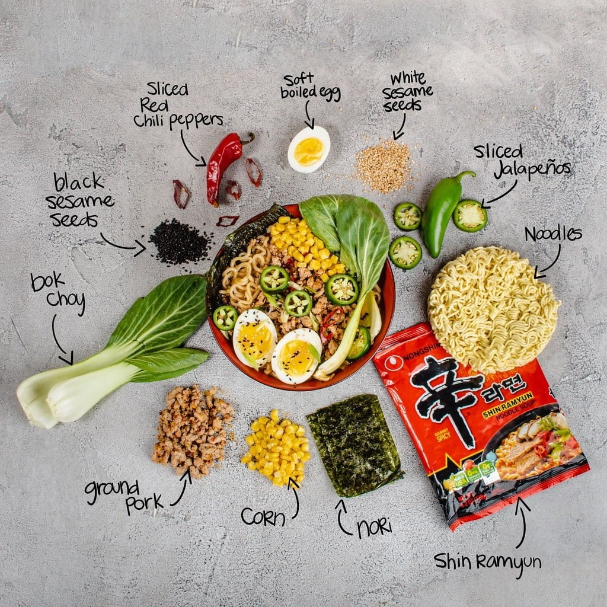

<div> <table style="border-collapse: collapse; width: 99.9251%;" border="1"><colgroup><col style="width: 50%;"><col style="width: 50%;"></colgroup> <tbody> <tr> <td> <div><span style="font-size: 14pt;"><strong>Ramen iute si picant Nongshim Big Bowl, 114g</strong></span></div> <div><span style="font-size: 14pt;">Ramenul numărul 1 din Coreea, acum la format mare. Nongshim Shin Big Bowl (114g) &icirc;ți aduce celebra supă gourmet picantă de vită &icirc;ntr-un ambalaj extrem de practic. Ideal pentru birou sau pentru momentele c&acirc;nd vrei o masă caldă, consistentă și plină de savoare originală, gata &icirc;n doar 5 minute.</span></div> </td> <td></td> </tr> <tr> <td></td> <td><span style="font-size: 14pt;">Definiția gustului intens și reconfortant. Descoperă textura perfect elastică a tăițeilor Nongshim, &icirc;mbogățiți cu o supă densă de vită și condimente asiatice premium. O porție generoasă și apetisantă, gata să &icirc;ți ofere experiența picantă și revigorantă a unui ramen stradal autentic din Seul.</span></td> </tr> <tr> <td><span style="font-size: 14pt;">Personalizează-ți bolul de Shin Ramyun! Acest pachet clasic de tăiței coreeni este baza ideală pentru un pr&acirc;nz creativ. Adaugă ou fiert moale, legume proaspete precum bok choy sau porumb, puțină carne și susan pentru a transforma un ramen instant premium &icirc;ntr-un preparat complet și spectaculos.</span></td> <td></td> </tr> </tbody> </table> </div>